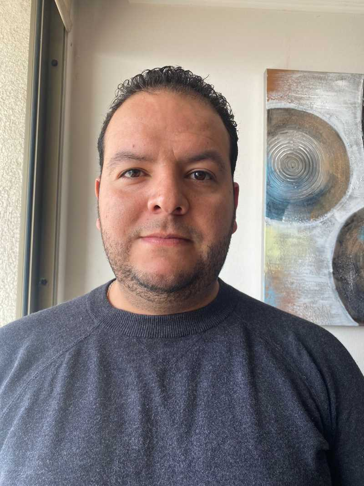

Informacion Personal
Nombre: Yosberth Enrique Orellanes Mejias
Correo electrónico: yosberth1991@gmail.com
Teléfono: +56967050125
 Mi
Linkedin
Mi
Linkedin
Experiencia laboral
- Wal-Mart Express Líder LTDA.
Cargo: Encargado de Áreas Perecederas
Tiempo: 2 años y 8 meses.
- Uber Actualidad
Educación
-
Institucion: Unidad Educativa Andrés Eloy Blanco
titulo obtenido: Bachiller en Ciencias
duracion: 2004 - 2009
-
Institucion: Universidad Nacional Experimental Rafael Maria Baralt
titulo obtenido: Ingeniero de Gas
duracion: 2009 - 2015